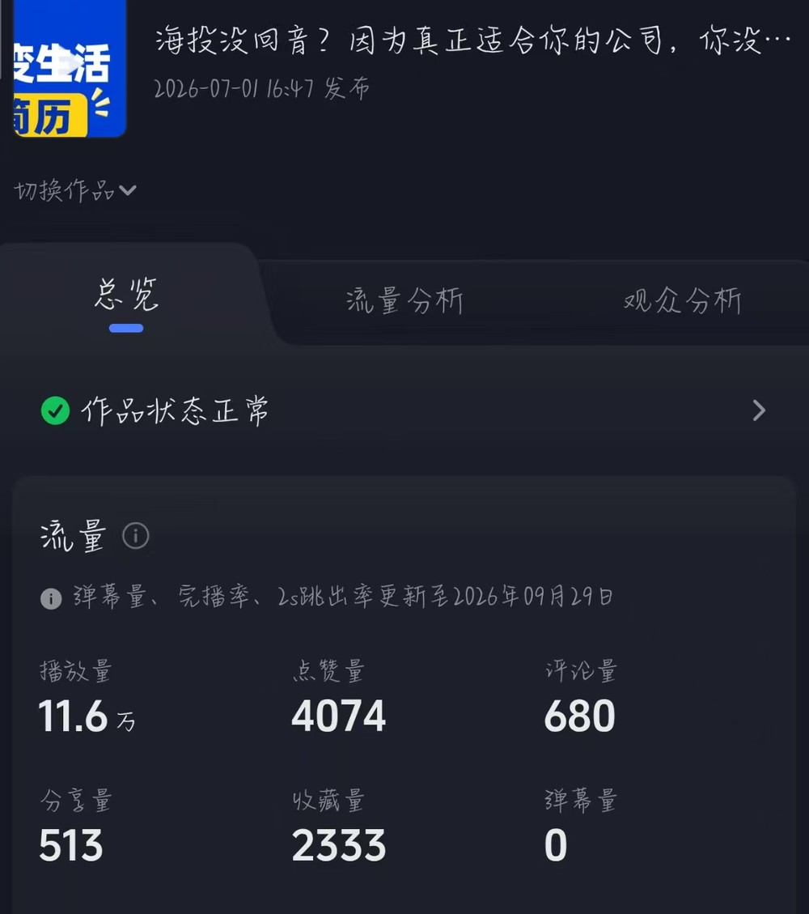
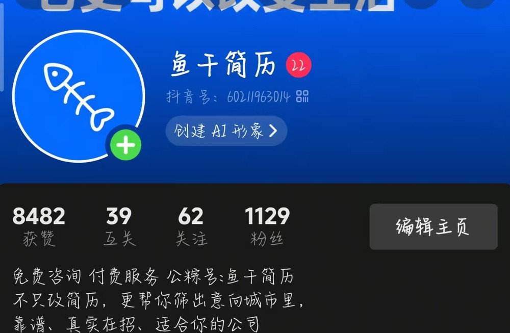

海投没回音？因为真正适合你的公司，你没筛
- 播放
- 11.6 万
- 点赞
- 4,074
- 收藏
- 2,333
- 评论
- 680
为什么爆：把「公司筛你」翻转成「你也在筛公司」，立场一变，评论区就有了代入感；收藏率 2.0%，说明它是「留着能用」的工具型内容，不是看完就走的情绪内容。
本条完播率、2 秒跳出率后台未更新，故不展示。
新媒体运营 / AI 内容运营
我是任一林。参与「鱼干简历」知识付费账号的内容运营，做求职选题、口播脚本与咨询承接；同时用 Python + DeepSeek 搭了一条内容流水线，把选题到脚本的准备工作批量化。
抖音：鱼干简历（60211963014）｜邮箱：2473793681@qq.com

1,129
账号当前数据，主页可查8,482
账号维度11.6 万
2026.07.01 发布3.7 万
完播率 7.13%2026.07 - 2026.11 围绕求职情绪、具体痛点和产品优势组织内容，衔接简历优化与岗位筛选服务咨询。下面两条是同一账号跑出来的两个不同选题。
为什么爆：把「公司筛你」翻转成「你也在筛公司」，立场一变，评论区就有了代入感；收藏率 2.0%，说明它是「留着能用」的工具型内容，不是看完就走的情绪内容。
本条完播率、2 秒跳出率后台未更新，故不展示。
拆开看结构：0 秒用学历焦虑留人 → 约 24 秒首次展示岗位清单 → 约 54 秒邀请提供专业与城市。2 秒跳出率 35.52%，说明开头够狠，但中段偏长。
57.2 秒作品；播放/互动为单条后台数据，与账号粉丝数分别统计。

作品集里最容易虚的就是粉丝数。所以我把主页截图放在这里：1,129 粉丝、8,482 获赞，任何人都能打开抖音核对。
我不把账号涨粉和单条播放混着说——播放是单条作品的数据，粉丝是账号阶段的结果，两者统计范围不同，放在一起容易误导。
播放量之外，我也看开头留存和交付展示的时机。这一页是一次没发布的改动——写出来是想说清我的判断依据。
原作约 24 秒才第一次展示岗位清单，约 54 秒才提出咨询需要哪些资料。评论里出现询价、补充专业和城市、请求推荐——需求是有的，只是被拖晚了。
下一版准备压缩重复的痛点表达，把一项具体交付提前到前 5 秒，再比较同一观察窗口内的留存与有效咨询。
时间点来自抽帧近似观察；留存数据用作比较基线，不直接推断单一原因。建议稿尚未发布，没有效果数据。
已发布作品 / 57.2 秒
从「不占优势」的求职处境切入，唤起目标用户共鸣。
用具体材料承接前面的求职困惑，解释服务价值。
提出专业与意向城市等信息，为下一步咨询做准备。
未发布建议稿 / 尚无效果数据
一句具体处境，接一项匿名岗位推荐，让用户更早看到交付物。
展示岗位门槛与能力对应点，讲清筛选依据。
区分优先核实、可以尝试和备选方向，给出投递顺序。
邀请提供专业、相关经历与意向城市，降低后续沟通成本。
用 Python + DeepSeek API 自己写的。不是展示会调 API，而是展示我知道内容生产卡在哪一步，并且能把它自动化。
实际跑出来的一次结果（10 个选题）
output/scripts/
01_投了80份简历没回音-问题可能不在简历.md
02_应届生第一份工作-别只看工资.md
03_面试被问-还有什么问题-90-的人问错了.md
…
output/report.md → 均分 7.5 / 阈值 7.0纯 Python 标准库，不装第三方依赖；模型层可换。代码可提供，也可现场跑一遍。
查看脚本源码直接用 DeepSeek 辅助整理需求、简历表达和岗位信息，再逐项人工核对，形成用户看得懂、能使用的说明。
整理岗位、城市、相关经历与限制条件，标记仍需补充的信息。
借助 AI 梳理经历和表达，人工核对事实，保留源稿与交付稿。
先核硬性门槛，再解释推荐理由、限制条件和投递入口。
按主要痛点和紧迫程度安排响应，把反馈带回后续内容和交付。
把已确认的信息、判断依据和待核项分开，让每一份交付都能回溯。
2024.05 - 2025.05
面向百货店、超市、一美元店等实体经营者，通过内容展示供货信息并承接咨询。
以抖音为主，完成选题、拍摄剪辑、发布与私信接待；同期参与店铺选品与平台运营。
2022.09 - 2025.06
人工智能专业 · 大专。主修深度学习、计算机视觉、Python 高级编程、数据结构、MySQL、Linux。
AI 内容运营、新媒体运营、内容运营，以及以内容获客为主的账号运营岗。
能从用户问题里找选题，独立完成拍摄剪辑与发布，跟进评论私信，并用数据决定下一步改什么；会用 AI 把重复环节做快。
邮箱 2473793681@qq.com｜抖音 60211963014（鱼干简历）｜长沙，随时到岗